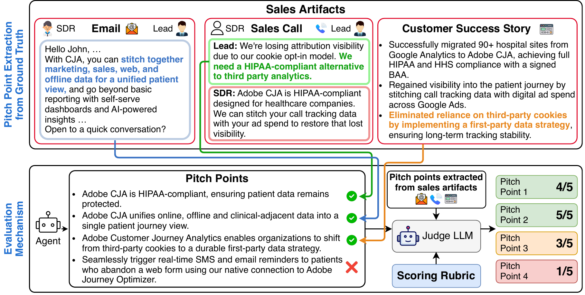
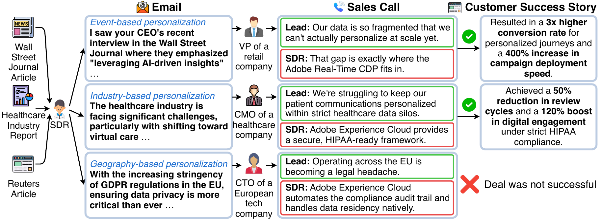
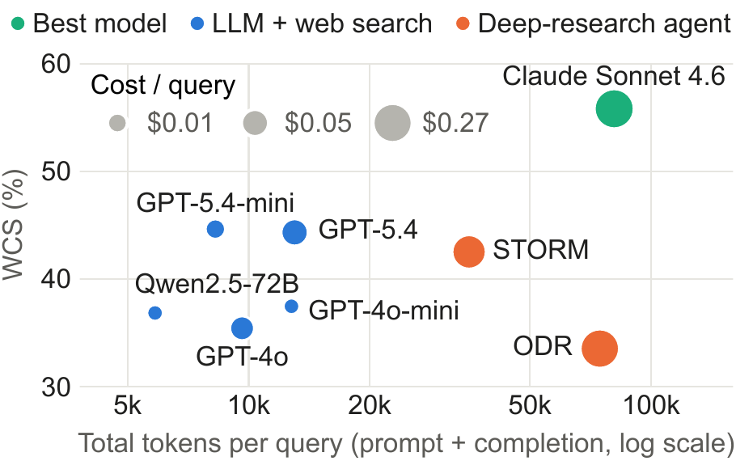
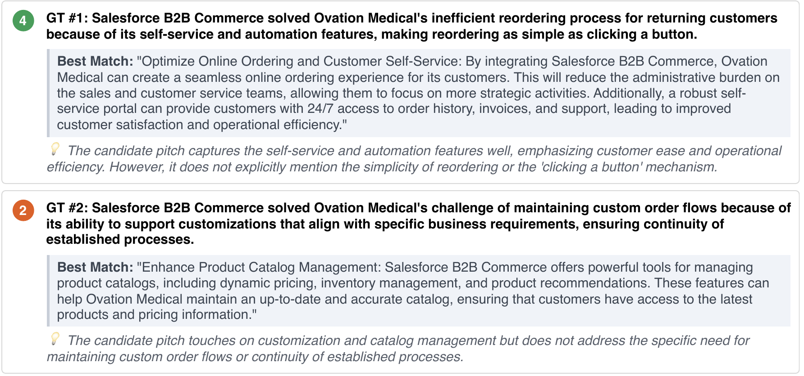

Get in touch with us at behavior-in-the-wild@googlegroups.com

Personalization is classically a two-party problem: a sender chooses what to say, and a receiver with independent objectives decides whether to act. A salesperson pitching the same analytics product leads with HIPAA compliance for a hospital and real-time reporting for a retailer, expecting a different argument to work on each. Existing LLM personalization benchmarks measure a narrower, one-party property: whether output matches the preferences of the same user it serves—sender and receiver being the same, as when RLHF aligns an assistant to its own user. The two-party case is harder to study automatically, since it needs ground truth linking specific content to an observed receiver action.
Sales outreach provides this: a message written for one prospect, recorded against whether it produced a reply, a call, or a closed deal. We introduce SDR-Arena, a framework for benchmarking two-party generative personalization at scale, and SDR-Bench, a public corpus of 50,000 customer success stories across 22 industries and 3500 enterprises. Given only pre-outcome information, an agent must reconstruct the arguments that won the deal, scored by a weighted nugget-recall metric (WCS). The best model, Claude Sonnet 4.6, reaches 55.8% WCS indicating it recovers only half the winning content—a plateau we observe across model families that costly deep-research pipelines do not close. An ablation shows the cause is retrieval, not reasoning: models improve substantially given the facts a human researcher would gather, but rarely find them through web search alone. Two studies with professional SDRs support the metric: only 48% of generated pitches were rated usable without editing, and WCS yields model rankings consistent with evaluation against expert strategies authored independently of any model output.
Values reported as Weighted Coverage Score (WCS, %). Search rows use the time-restricted web-search tool; Direct rows are the same LLMs with search disabled. STORM and ODR are deep-research agents built on Qwen2.5-72B.
| Model | SDR-Bench Success Stories | Private Enterprise Dataset | ||||||
|---|---|---|---|---|---|---|---|---|
| Tech. | Mfg. | Energy | IT | Agg. | Health. Emails (<$1B) |
Tech. Emails (>$10B) |
Sales Calls | |
| Search | ||||||||
| Claude Sonnet 4.6 | 52.6 | 60.5 | 54.0 | 54.9 | 55.8 | 60.89 | 61.33 | 42.85 |
| GPT-5.4-mini | 40.99 | 46.02 | 41.18 | 45.39 | 44.63 | 43.67 | 52.66 | 35.72 |
| GPT-5.4 | 38.21 | 45.46 | 42.90 | 46.67 | 44.32 | 48.71 | 53.02 | 33.61 |
| STORM-QWEN-2.5 | 43.40 | 41.59 | 39.24 | 44.60 | 42.51 | 32.27 | 39.24 | 33.80 |
| GPT-4o-mini | 33.30 | 38.54 | 37.07 | 38.05 | 37.46 | 39.14 | 45.63 | 29.68 |
| QWEN2.5-72B | 32.09 | 36.75 | 37.04 | 38.21 | 36.84 | 36.72 | 36.43 | 29.57 |
| GPT-4o | 33.50 | 38.93 | 32.26 | 36.01 | 35.42 | 40.62 | 45.17 | 26.19 |
| ODR-QWEN-2.5 | 30.16 | 30.95 | 35.28 | 35.33 | 33.53 | 30.41 | 39.82 | 26.92 |
| Direct | ||||||||
| Claude Sonnet 4.6 | 52.14 | 51.47 | 41.29 | 48.99 | 49.88 | 42.93 | 54.26 | 39.71 |
| GPT-5.4-mini | 42.60 | 42.28 | 42.39 | 46.43 | 44.10 | 42.01 | 54.09 | 34.53 |
| GPT-5.4 | 39.69 | 42.69 | 42.14 | 45.81 | 43.95 | 46.53 | 55.01 | 36.03 |
| GPT-4o | 35.52 | 38.15 | 36.62 | 37.44 | 38.15 | 45.09 | 46.40 | 32.59 |
| QWEN2.5-72B | 31.28 | 33.09 | 36.28 | 38.19 | 35.67 | 25.57 | 41.24 | 31.34 |
| GPT-4o-mini | 33.09 | 33.98 | 30.52 | 32.44 | 33.88 | 30.15 | 42.95 | 30.05 |
Each stage of the sales funnel leaves a human-authored artifact at a known successful transition: an outreach email that secured a call, a call transcript that opened deal discussions, and a customer success story that documents a closed deal. Because every artifact is logged against the specific (seller, prospect, product) interaction that produced it, the funnel yields ground truth for what content actually induced a receiver to act, at scale (Figure 2).

SDR-Arena casts two-party personalization as a historical back-testing problem: can an agent, standing in for the Sales Development Representative (SDR), reconstruct the arguments that historically induced a successful outcome, using only information available before that outcome was known? Each evaluation instance is a tuple (S, C, P, t) of a seller, a prospective customer, the product(s) being pitched, and the historical timestamp. The agent researches the prospect and produces a set of pitch points: atomic arguments that link a product capability to a specific need of the prospect through a concrete value proposition.
SDR-Bench is a public corpus of 50,000 customer success stories from 3500 global enterprises across 22 industries. Starting from 7 million crawled webpages, a multi-stage filtering pipeline removed non-text formats, generic landing pages, articles without verifiable publication dates or identifiable products, and anonymized stories, followed by URL and locale-based de-duplication. Each story is paired with the seller, prospect, product, and historical timestamp needed for evaluation.
The Private Enterprise Dataset contains real human-authored outreach paired with downstream prospect actions from two organizations: roughly 90k outreach emails by 124 SDRs and 5,435 sales call transcripts from a Fortune 100 technology company (2023–2025), and 24,506 outreach emails from a mid-sized healthcare firm. This data is used for evaluation only and is not released.
Removing web search changes WCS by less than one point for GPT-5.4 (44.32 → 43.95), GPT-5.4-mini (44.63 → 44.10), and Qwen2.5-72B (36.84 → 35.67), and even improves GPT-4o (35.42 → 38.15): these models fall back on prior knowledge or generic firmographic content rather than converting search into strategic content. Claude is the exception, losing 17.96 points on Healthcare email outreach, 7.07 on Tech, and dropping from 55.80 to 49.88 on success stories without search. A memorization probe splitting SDR-Bench at GPT-4o's training cutoff shows negligible WCS differences, ruling out pre-training leakage as a confound.
To separate retrieval from reasoning, expert SDRs supplied 50 questions they routinely ask when researching a deal. These were issued through the temporally constrained simulator and compiled into expert-curated research reports on the customer, the seller, the product, or all three. Supplying these reports lifts WCS well beyond what the model's own search achieves, even when the model already has live web access. Seller and product evidence drive the gain; customer evidence alone is flat-to-negative.
| Report supplied | QWEN-2.5-72B | Claude Sonnet 4.6 | ||
|---|---|---|---|---|
| Direct | +Search | Direct | +Search | |
| + Customer | −2.5 | −3.6 | +0.9 | −2.4 |
| + Seller | +5.2 | +1.8 | +5.9 | +1.1 |
| + Product | +5.5 | +2.8 | +5.7 | +1.7 |
| + All | +5.3 | +3.3 | +7.0 | +6.6 |
ΔWCS from expert-curated research reports, relative to each configuration's no-report baseline (averages over 3 runs).
A low WCS could in principle reflect a valid but different winning argument. To rule this out, each instance presents five real cold outbound emails sent to prospects in the same industry, exactly one of which received a positive response, and the agent must identify it (random chance: 20%). Even the best model picks the winner less than half the time, and discrimination accuracy is rank-correlated with WCS (Spearman ρ = 0.97 against enterprise-email WCS, 0.84 against SDR-Bench WCS).
| Model | 5-way Acc. (%) | Email-Succ. WCS | Story-Agg. WCS |
|---|---|---|---|
| Claude Sonnet 4.6 | 45.8 | 61.11 | 55.80 |
| GPT-5.4 | 40.5 | 50.87 | 44.32 |
| GPT-5.4-mini | 39.0 | 48.17 | 44.63 |
| GPT-4o | 37.0 | 42.90 | 35.42 |
| GPT-4o-mini | 37.0 | 42.39 | 37.46 |
| STORM | 36.2 | 35.76 | 42.51 |
| QWEN-2.5-72B | 35.0 | 36.58 | 36.84 |
| ODR | 32.2 | 35.12 | 33.53 |
GPT-5.4-mini is the most efficient frontier model (44.6 WCS at ~8k tokens per query), whereas the deep-research agents spend one to two orders of magnitude more tokens than LLM + search baselines without escaping the personalization plateau. Claude Sonnet 4.6 achieves the highest WCS (55.8) at a token budget comparable to STORM and ODR, both of which trail it by more than 13 points.

Three blinded annotators scored 100 model responses on 20 success stories following the Coverage Judge protocol. The judge tracks human scores (Spearman ρ = 0.74, p < 0.0001), preserves the human model ordering (Claude > STORM ≈ GPT > Qwen > ODR), and is systematically more conservative than human raters. In a field deployment, 12 professional SDRs used Claude Sonnet 4.6 with SDR-Arena on 200+ live prospects: 48.2% of generated pitch points both reflected a genuine understanding of the prospect's pain points and were usable without rewriting. Separately, senior SDRs from five enterprises authored gold-standard strategies for 30 products without seeing any model output; expert-overlap scores correlate with WCS at Pearson r = 0.816.

@misc{srivastava2026benchmarkingpersonalizationcapabilitieslarge,
title={Benchmarking the Personalization Capabilities of Large Language Models},
author={Ashutosh Srivastava and Siddharth Yedlapati and Vinay Aggarwal and Yaman Kumar Singla and Shashwat Dixit and Jitendra Ajmera and Balaji Krishnamurthy},
year={2026},
eprint={2607.20471},
archivePrefix={arXiv},
primaryClass={cs.AI},
url={https://arxiv.org/abs/2607.20471},
}